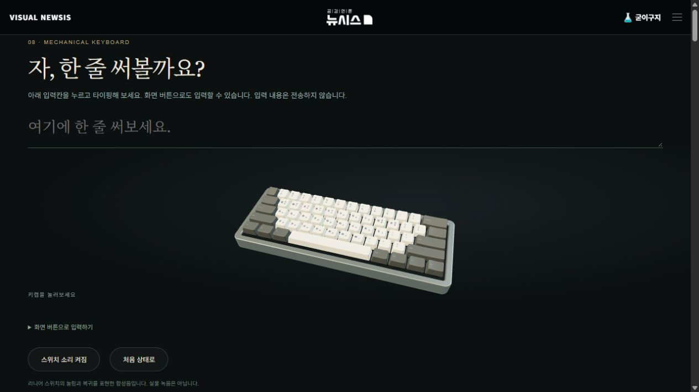
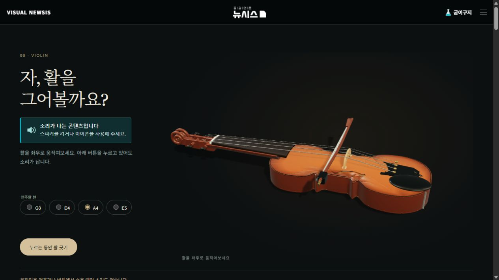
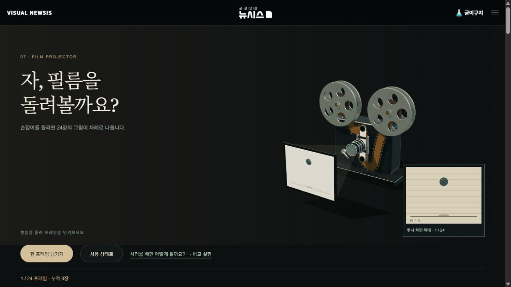
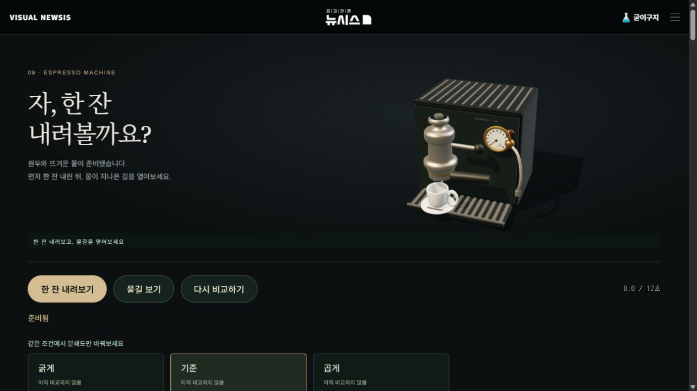

<!doctype html><html lang="ko"><meta charset="utf-8"><meta name="viewport" content="width=device-width,initial-scale=1"><title>굳이구지 개선본 실제 배포 화면</title><style>body{margin:0;background:#101817;color:#e8e6df;font:17px/1.7 system-ui,sans-serif}main{max-width:1200px;margin:auto;padding:30px 18px}img{width:100%;height:auto}figure{margin:30px 0 60px}a{color:#66d2d0}h1{font-size:26px}</style><main><h1>굳이구지 개선본 실제 배포 화면</h1><p>2026-10-30 · 두 차례 서버 배포 성공 후 실제 서비스 화면을 캡처했습니다.</p><figure><h2><a href="https://visual.newsis.com/goodeasy/keyboard/?v=20261030-espresso2">키보드 본편 열기 ↗</a></h2></figure><figure><h2><a href="https://visual.newsis.com/goodeasy/violin/?v=20261030-espresso2">바이올린 본편 열기 ↗</a></h2></figure><figure><h2><a href="https://visual.newsis.com/goodeasy/projector/?v=20261030-espresso2">영사기 본편 열기 ↗</a></h2></figure><figure><h2><a href="https://visual.newsis.com/goodeasy/espresso-machine/?v=20261030-espresso2">에스프레소 본편 열기 ↗</a></h2></figure></main></html>